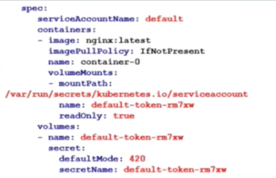

Kubernetes基本概念
- Pod
- 一组功能相关的Container的封装
- 共享存储和Network Namespace
- K8S调度和作业运行的基本单位（Scheduler调度，Kubelet运行）
- 容易“走失”，需要Workload和Service的“呵护”
- Workloads（Deployment, StatefulSet, DaemonSet, Job...）
- 一组功能相关的Pod的封装
- Service
- Pod“防失联”
- 给一组pod设置反向代理
Kubernetes API对象的基本构成
使用kubelet与集群交互
- create 从文件或stdin创建资源
- expose 为deployment，pod创建Service
- run Run a particular image on the cluster
- set Set specific features on objects
- get 最基本的查询命令。如kubectl get rs, kubectl get deploy, kubectl get svc, kubectl get rs/foo
- explain 查看资源定义。如kubectl explain replicaset
- edit 使用系统编辑器编辑资源。如kubectl edit deploy/foo
- delete 删除指定资源，支持文件名、资源名、label selector。如kubectl delete po -l foo=bar
Deploy Commands:
- rollout Deployment, Daemonset的升级过程管理（查看状态、操作历史、暂停升级、恢复升级、回滚等）
- rolling-update 客户端滚动升级，仅限ReplicationController
- scale 修改Deployment, ReplicaSet, ReplicationController, Job的实例数
- autoscale 为Deploy, RS, RC配置自动伸缩规则（依赖heapster和hpa）
Cluster Management Commands:
- certificate Modify certificate resources.
- cluster-info 查看集群信息
- top 查看资源占用率（依赖heapster）
- cordon 标记节点为unschedulable
- uncordon 标记节点为schedulable
- drain 驱逐节点上的应用，准备下线维护
- taint 修改节点taint标记
Troubleshooting and Debugging Commands:
- describe 查看资源详情
- logs 查看pod内容器的日志
- attach Attach到pod内的一个容器
- exec 在指定容器内执行命令
- port-forward 为pod创建本地端口映射
- proxy 为kubernetes API server创建代理
- cp 容器内外/容器间文件拷贝
Advanced Commands:
- apply 从文件或stdin创建/更新资源
- patch 使用strategic merge patch语法更新对象的某些字段
- replace 从文件或stdin更新资源
- convert 在不同API版本之间转换对象定义
Settings Commands:
- label 给资源设置label
- annotate 给资源设置annotation
- completion 获取shell自动补全脚本（支持bash和zsh）
Other Commands:
- api-versions Print the supported API versions on the server, in the form of "group/version"
- config 修改kubectl配置（kubeconfig文件），如context
- help Help about any command
- version 查看客户端和Server端k8s版本
kubectl实用技巧
- 配置kubectl自动完成
source <(kubectl completion bash) - 用run命令生成yaml文件
kubectl run --image=nginx my-nginx -o yaml --dry-run > my-nginx-deploy.yaml - 用get命令导出（针对已经存在的资源）
kubectl get statefulset/foo -o=yaml --export > new.yaml
K8S调度器的资源分配机制
-
基于Pod中容器request资源“总和”调度
- resources.limits影响pod的运行资源上限，不影响调度
- initContainer取最大值，container取累加值，最后取大者即Max( Max(initContainers.requests)，Sum(containers.request) )
- 未指定request资源时，按0资源需求进行搜索
-
基于资源声明量的调度，而非实际占用
- 不依赖监控，系统不会过于敏感
- 能否调度成功：
pod.request < node.allocatable - node.requested
-
Kubernetes node资源的盒子模型
-
资源分配相关算法
- GeneralPredicates（主要是PodFitResources）
- LeastRequestedPriority
- BalancedResourceAllocation，平衡cpu/mem的消耗比例
Kubernetes中的高级调度及用法
nodeSelector：将Pod调度到特定的Node上
- 语法格式：map[string]string
- 作用：
- 匹配node.labels
- 排除不包含nodeSelector中指定label的所有node
- 匹配机制---完全匹配
apiVersion: v1
kind: Pod
metadata:
labels:
pod-template-hash: "4173307778"
run: my-pod
name: my-pod
namespace: default
spec:
containers:
- image: nginx
imagePullPolicy: Always
name: my-pod
ports:
- containerPort: 80
protocol: TCP
resources: {}
nodeSelector:
disktype: ssd
node-flavor: s3.large.2
nodeAffinity：nodeSelector升级版
- 与nodeSelector关键差异
- 引入运算符：
- 支持枚举label可能的取值，如zone in [az1, az2, az3...]
- 支持
硬性过滤和软性评分 - 硬性过滤规则支持指定
多条件之间的逻辑或运算 - 软性评分规则支持
设置条件权重值
apiVersion: v1
kind: Pod
metadata:
name: with-node-affinity
spec:
affinity:
nodeAffinity:
#硬性过滤：排除不具备指定label的node
requiredDuringSchedulingIgnoredDuringExecution:
nodeSelectorTerms:
- matchExpressions:
- key: node-flavor
operator: In
values:
- s3.large.2
- s3.large.3
#软性评分：不具备指定label的node打低分，降低node被选中的几率
preferredDuringSchedulingIgnoredDuringExpression:
- weight: 1
preference:
matchExpressions:
- key: node-flavor
operator: In
values:
- s3.large.2
containers:
- name: with-node-affinity
image: k8s.gcr.io/pause:2.0
podAffinity：让某些Pod分布在同一组Node上
- 与nodeAffinity的关键差异
- 定义在PodSpec中，亲和与反亲和规则具有对称性
- labelSelector的匹配对象为Pod
- 对node分组，依据label-key = topologyKey，每个label-value取值为一组
- 硬性过滤规则，条件间只有逻辑与运算
apiVersion: v1
kind: pod
metadata:
name: with-pod-affinity
spec:
affinity:
podAffinity:
#硬性过滤：排除不具备指定pod的node组
requiredDuringSchedulingIgnoredDuringExecution:
- labelSelector:
matchExpressions:
- key: security
operator: In
values:
- S1
topologyKey: kubernetes.io/zone
#软性评分：不具备指定pod的node组打低分，降低该组node被选中的几率
preferredDuringSchedulingIgnoredDuringExecution:
- weight: 100
podAffinityTerm:
labelSelector:
matchExpressions:
- key: security
operator: In
values:
- S2
topologyKey: kubernetes.io/hostname
containers:
- name: with-pod-affinity
image: k8s.gcr.io/pause:2.0
podAntiAffinity：避免某些Pod分布在同一组Node上
- 与podAffinity的差异
- 匹配过程相同
- 最终处理调度结果时取反
即 - podAffinity中可调度节点，在podAntiAffinity中为不可调度
- podAffinity中高分节点，在podAntiAffinity中为低分
Taints：避免Pod调度到特定Node上
- 带effect的特殊label，对Pod有排斥性
- 硬性排斥NoSchedule
- 软性排斥PreferNoshedule
- 系统创建的taint附带时间戳
- effect为NoExecute
- 便于触发对Pod的超时驱逐
- 典型用法：预留特殊节点做特殊用途
给node添加taint
kubectl taint node node-n1 foo=bar:NoSchedule
删除taint
kubectl taint node node-n1 foo:NoSchedule-
apiVersion: v1
kind: Node
metadata:
labels:
beta.kubernetes.io/arch: amd64
beta.kubernetes.io/os: linux
kubernetes.io/hostname: node-n1
name: node-n1
spec:
externalID: node-n1
taints:
- effect: NoSchedule
key: accelerator
timeAdded: null
value: gpu
status: {...}
kubernetes网络
Pod网络
- 一个Pod一个IP
- 每个Pod独立IP，Pod内所有容器共享网络namespace（同一个IP）
- 容器之间直接通信，不需要NAT
- Node和容器直接通信，不需要NAT
- 其他容器和容器自身看到的IP是一样的
- 集群内访问走Service，集群外访问走Ingress
- CNI（container network interface）用于配置Pod网络
- 不支持docker网络

- 不支持docker网络
CNI：Container Network Interface
- 容器网络的标准化
- 使用JSON来描述网络配置
- 两类接口：
- 配置网络--创建容器时调用
AddNetwork(net NetworkConfig, rt RuntimeConf) (types.Result, error) - 清理网络--删除容器时调用
DelNetwork(net NetworkConfig, rt RuntimeConf)
- 配置网络--创建容器时调用
CNI插件：host-local + bridge
$ cat /etc/cni/net.d/10-mynet.conf
{
"name": "mynet",
"type": "bridge",
"ipam": {
"type": "host-local"
"subnet": "10.10.0.0/16"
}
}
CNI plugin二进制文件：/opt/cni/bin/{host-local, bridge...}
Kubernetes Service
Service和Endpoints定义
apiVersion: v1
kind: Service
metadata:
name: nginx-service
namespace: default
spec:
clusterIP: 10.101.28.148
ports:
- name: http
port: 80
protocol: TCP
targetPort: 8080
selector:
app: nginx
---
apiVersion: v1
kind: EndPoints
metadata:
name: nginx-service
namespace: default
subnets:
- addresses:
- ip: 172.17.0.2
nodeName: 100-106-179-237.node
targetRef:
kind: Pod
name: nginx-rc-c8tw2
namespace: default
- ip: 172.17.0.3
nodeName: 100-106-179-238.node
targetRef:
kind: Pod
name: nginx-rc-x14tv
namespace: default
ports:
- name: http
port: 8080
protocol: TCP
LoadBalancer类型Service
- 同时是ClusterIP类型
- 需要跑在特定的cloud provider上
- Service Controller自动创建一个外部LB并配置安全组
- 对集群内访问，kube-proxy用iptables或ipvs实现了云服务提供商LB部分功能：L4转发，安全组规则等。
apiVersion: v1
kind: Service
metadata:
name: my-service
spec:
selector:
app: MyApp
ports:
- protocol: TCP
port: 80
targetPort: 9376
clusterIP: 10.0.171.239
loadBalancerIP: 78.11.24.19 #外部LB IP
type: LoadBalancer
Ingress
Ingress是授权入站连接到达集群服务的规则集合
- 支持通过URL方式将Service暴露到K8S集群外，Service之上的L7访问入口
- 支持自定义Service的访问策略
- 提供按域名访问的虚拟主机功能
- 支持TLS
K8S存储管理
持久化存储卷（PersistentVolume）
存储系统与应用系统区分开，单独资源对象，它不直接和Pod发生关系，通过另一个资源对象PersistentVolumeClaim来绑定关联
PV生命周期
Provisioning：PV的预制创建有两种模式：静态模式和动态模式
静态模式：队创建PVC外，还需手动创建PV
动态模式：只需创建PVC，系统根据PVC自动创建PV
持久化存储卷声明（PersistentVolumeClaim）
apiVersion: v1
kind: PersistentVolumeClaim
metadata:
name: mongodb-pv-claim
labels:
app: mongodb
spec:
accessModes: #存储访问模式，此能力依赖存储厂商的能力
- ReadWriteOnce
resources:
requests:
storage: 5Gi #存储大小
storageClassName: sata #存储类型，适配不同场景
K8S安全管理
- 部署态的安全控制
- 认证
- 鉴权
- Admission（准入控制）
- Pod SecurityContext
- 运行态的安全控制
- Network policy
安全全景图
认证（Authentication）和鉴权（Authorization）
- 认证支持多种方式，其中一种认证方式认证通过即通过，输出userinfo
- 基于认证输出的userinfo进行鉴权，鉴权也支持多种方式，常用方式为RBAC
认证（Authentication）
认证方式有：X509、service account、Authenticating Proxy、WebHook、username/password...
常用认证方式介绍：
- X509：
- kube-apiserver的启动参数
‘--client-ca-file=ca.crt’指定X509根证书，请求中需带有由该根证书签名的证书，才能认证通过 - 客户端签署的证书里包含user、group信息，具体为证书的subject.CommonName（username）以及subject.Organization（group）
- kube-apiserver的启动参数
- Service account（为k8s必选的认证方式）：
- kube-apiserver的启动参数
‘--service-account-key-file=key.pem’指定pem文件，用以生成kearer token；‘--service-account-lookup=true/fasle’表示在删除service acount后其token是否被吊销 - Serviceaccount Admission默认给Pod打上service account，当然用户也可以自行指定所需要的service account

- kube-apiserver的启动参数
鉴权（Authorization）
鉴权分为以下几种：RBAC、ABAC、Node以及Webhook
常用RBAC介绍：
Admission(PodSecurityPolicy)
- Kube-apiserver的启动参数
‘--admission-control=PodSecurityPolicy’新增PodSecurityPolicy admisson - Admin用户创建PodSecurityPolicy策略，决定能创建什么样的Pod
- 创建Pod的用户也必须赋予它能使用PodSecurityPolicy策略的权限
安全的持久化保存键值（etcd）
- etcd支持备份恢复机制，防止数据被误删除导致数据丢失
- 用户敏感信息建议存放在secret类型的资源中，该类型资源是加密存储在etcd中
- etcd支持https，kube-apiserver访问etcd使用https协议
具体配置方式：
安全上下文（Pod SecurityContext）
- 分为Pod级别和容器级别，容器级别的会覆盖Pod级别的相同设置。
- 在PodSecurityPolicy策略的情况下，两者需要配合使用。
apiVersion: v1
kind: Pod
metadata:
name: wangbo
spec:
securityContext:
privileged: false #是否使用特权容器
runAsUser: 1000 #指定容器启动UID
fsGroup: 2000 #指定Pod中容器文件所属组GID
volumes:
- name: test
emptyDir: {}
containers:
- name: test
image: gcr.io/google-samples/node-hello:1.0
volumeMounts:
- name: test
mountPath: /data/test
securityContext:
readOnlyRootFilesystem: false #容器的文件系统是否是只读
runAsUser: 1001
privileged: false
capabilities: #容器系统调用能力配置
add: ["NET_ADMIN", "SYS_TIME"]
drop: ["SYS_BOOT"]
Network Policy
分为Ingress和Engress策略控制，都为白名单
- Ingress为入口请求控制
- Egress为出品请求控制
apiVersion: networking.k8s.io/v1
kind: NetworkPolicy
metadata:
name: test-network-policy
namespace: default
spec:
podSelector:
matchLabels: #规则匹配器，选择匹配的Pod
role: db
policyTypes:
- Ingress
- Egress
ingress:
- from
- ipBlock:
cidr: 172.17.0.0/16 #远端（访问端）IP白名单开放
except:
- 172.17.1.0/24
- namespaceSelector:
matchLabels: #远端（访问端）namespace白名单开放
project: myproject
- podSelector:
matchLabels: #远端（访问端）pod白名单开放
role: frontend
ports: #本端（被访问端）允许被访问的端口和协议
- protocol: TCP
port: 6379
egress:
- to:
- ipBlock:
cidr: 10.0.0.0/24
ports:
- protocol: TCP
port: 5978
禁止所有入口请求
apiVersion: networking.k8s.io/v1
kind: NetworkPolicy
metadata:
name: default-deny
spec:
podSelector: {}
policyTypes:
- Ingress
禁止所有出口请求
apiVersion: networking.k8s.io/v1
kind: NetworkPolicy
metadata:
name: default-deny
spec:
podSelector: {}
policyTypes:
- Egress
允许所有入口请求
apiVersion: networking.k8s.io/v1
kind: NetworkPolicy
metadata:
name: allow-all
spec:
podSelector: {}
policyTypes:
- Ingress
ingress:
- {}
允许所有出口请求
apiVersion: networking.k8s.io/v1
kind: NetworkPolicy
metadata:
name: allow-all
spec:
podSelector: {}
policyTypes:
- Egress
egress:
- {}